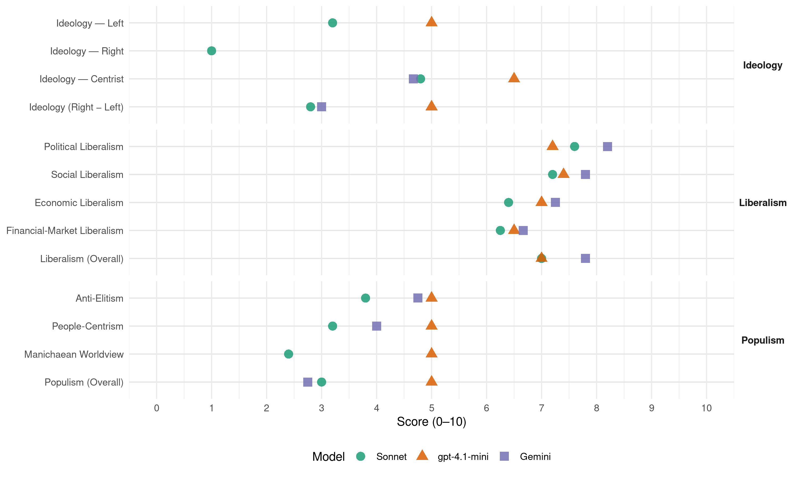

CDS (Spain, 1989)
manifesto_id 33512_198910
Get full text: This site shows derived annotations and short verbatim quotes only. The full manifesto text is © Manifesto Project / WZB — obtain it via manifesto-project.wzb.eu using the manifesto_id above.
Headline scores
| Dimension | Sonnet | gpt-4.1-mini | Gemini |
|---|---|---|---|
| Populism (Overall) | 3.0 | 5.0 | 2.8 |
| Anti-Elitism | 3.8 | 5.0 | 4.8 |
| People-Centrism | 3.2 | 5.0 | 4.0 |
| Manichaean Worldview | 2.4 | 5.0 | – |
| Ideology (Right − Left) | 2.8 | 5.0 | 3.0 |
| Liberalism (Overall) | 7.0 | 7.0 | 7.8 |
| Political Liberalism | 7.6 | 7.2 | 8.2 |
| Social Liberalism | 7.2 | 7.4 | 7.8 |
| Economic Liberalism | 6.4 | 7.0 | 7.2 |
| Financial-Market Liberalism | 6.2 | 6.5 | 6.7 |
Evidence per dimension
Economic Liberalism
Gemini · score 7.0 · verified · chunk 1
“Se propondrán desregulaciones en el mercado de servicios”
y su producción pública. Se propondrán desregulaciones en el mercado de servicios. d) Un mayor gasto público
Gemini · score 7.0 · verified · chunk 2
“un mercado con precios liberados”
hasta el consumo, en un mercado con precios liberados. - Establecer una política de
Gemini · score 8.0 · verified · chunk 3
“asumiendo, por razones de eficiencia y competitividad, la tendencia hacia la desregulación”
CDS considera urgente desarrollar la política de telecomunicaciones que se desprende de las propuestas de la Comunidad Europea, asumiendo, por razones de eficiencia y competitividad, la tendencia hacia la desregulación.
Gemini · score 7.0 · verified · chunk 4
“una gestión competitiva y eficaz”
CRITERIOS QUE OBLIGUEN A UNA GESTIÓN COMPETITIVA Y EFICAZ
gpt-4.1-mini · score 7.0 · verified · chunk 1
“libre competencia”
LAS DIFERENCIAS RESULTANTES DE RENTA HAN DE PARTIR DE UNA IGUALDAD DE OPORTUNIDADES Y EN LIBRE COMPETENCIA; SERVIR PERA ESTIMULAR EL TRABAJO, EL AHORRO Y LA INVERSIÓN Y, mediante todo ello, GARANTIZAR EL FUTURO DE LOS JÓVENES Y LA SATISFACCIÓN DE LAS NECESIDADES BÁSICAS PRESENTES.
gpt-4.1-mini · score 7.0 · verified · chunk 2
“FAVORECER la creación de empresas comerciales y de servicios”
IMPULSAR los sectores de demanda fuerte; OPTIMIZAR los sectores de demanda débil; OPTIMIZAR el tamaño de la empresa media española, impulsando la concentración sectorial amo medio para poder competir con la empresa media europea, especialmente en los sectores estratégicos; FAVORECER la creación de empresas comerciales y de servicios; REFORZAR la fabricación de productos de primera línea, mediante la participación en programas multinacionales; RACIONALIZAR la utilización de los recursos mediante su concentración en unos pocos sectores claves.
gpt-4.1-mini · score 5.0 · verified · chunk 3
“la agricultura, la ganadería y la pesca son los sectores económicos en que se realiza mayor cesión de soberanía nacional a la Comunidad Europea”
La agricultura, la ganadería y la pesca son los sectores económicos en que se realiza mayor cesión de soberanía nacional a la Comunidad Europea. El Tratado de Roma de 1957 y la subsiguiente Conferencia de Stresa definieron los principios, objetivos e instrumentos básicos de una Política Agrícola Común (PAC) para todos los Estados miembros.
gpt-4.1-mini · score 8.0 · verified · chunk 4
“la política de retribuciones contemplará como criterio principal el acercamiento entre las retribuciones básicas del sector público y las del sector privado”
g) La política de retribuciones contemplará como criterio principal el acercamiento entre las retribuciones básicas del sector público y las del sector privado. Se suprimirá toda discrecionalidad en el reparto de complementos. h) Se mantendrá restrictivamente la política de laboralización parcial de la Administración publica, de acuerdo con la situación de las comunidades europeas.
gpt-4.1-mini · score 8.0 · verified · chunk 5
“crecimiento, comercio exterior y deuda externa”
propiciar tomas de postura comunitarias que ayuden al desarrollo iberoamericano en el orden político (democracia y derechos humanos), económico (crecimiento, comercio exterior y deuda externa), social (cambio de estructuras) y cultural (diálogo e intercambios entre los países iberoamericanos y la CE). El Gobierno español apoyará y propondrá a la CE que se respalden las iniciativas regionales destinadas a promover la paz, el desarrollo y los derechos humanos,
Sonnet · score 7.0 · verified · chunk 1
“DESREGULACIÓN Y HOMEGENEIZACIÓN DEL SISTEMA FINANCIERO”
Y LA DESREGULACIÓN Y HOMEGENEIZACIÓN DEL SISTEMA FINANCIERO, a fin de garantizar, a través de una mayor competencia. la reducción de sus márgenes
Sonnet · score 7.0 · verified · chunk 2
“sector industrial saneado, competitivo, moderno e innovador”
la existencia de un sector industrial saneado, competitivo, moderno e innovador es imprescindible para hacer frente al reto comunitario y al impacto de la creciente internacionalización
Sonnet · score 7.0 · verified · chunk 3
“la tendencia hacia la desregulación”
asumiendo, por razones de eficiencia y competitividad. la tendencia hacia la desregulación
Sonnet · score 6.0 · verified · chunk 4
“suprimir todo aquello que perjudica su libre competitividad”
LA LEY DE TELEVISIONES PRIVADAS, para suprimir todo aquello que perjudica su libre competitividad con las televisiones estatal y autonómica
Sonnet · score 5.0 · verified · chunk 5
“crecimiento, comercio exterior y deuda externa”
en el orden político (democracia y derechos humanos), económico (crecimiento, comercio exterior y deuda externa), social (cambio de estructuras)
Financial-Market Liberalism
Gemini · score 7.0 · verified · chunk 1
“la desregulación y homegenización del sistema financiero, a fin de garantizar, a través de una mayor competencia”
y la desregulación y homegenización del sistema financiero, a fin de garantizar, a través de una mayor competencia. la reducción de sus márgenes.
Gemini · score 7.0 · verified · chunk 2
“sociedades de capital-riesgo”
empresas con garantías de sociedades de capital-riesgo. 6. SE ESTABLECERÁN incentivos
Gemini · score 6.0 · verified · chunk 4
“accesibilidad al crédito”
simplificada y mayor accesibilidad al crédito, ya sea en forma de asistencia
gpt-4.1-mini · score 7.0 · verified · chunk 1
“desregulación y homogeneización del sistema financiero”
DE LA REDUCCIÓN DE LOS COSTES Y MÁRGENES DE LA INTERMEDIACIÓN FINANCIERA, POR MEDIO DE LA ELIMINACIÓN DE LOS COEFICIENTES OBLIGATORIOS de los intermediados financieros, que encarecen indebidamente sus costes Y LA DESREGULACIÓN Y HOMEGENEIZACIÓN DEL SISTEMA FINANCIERO, a fin de garantizar, a través de una mayor competencia, la reducción de sus márgenes.
gpt-4.1-mini · score 6.0 · verified · chunk 2
“SE CREARÁ un sistema de créditos para la financiación de proyectos de I+D”
3. SE FAVORECERÁ la financiación de contratos entre los departamentos ministeriales y los centros de investigación. 4. SE CREARÁ un sistema de créditos para la financiación de proyectos de I+D. 5. SE CONTRIBUIRÁ A LA constitución de fondos para el fomento de la innovación en las empresas con garantías de sociedades de capital-riesgo.
Sonnet · score 7.0 · verified · chunk 1
“ELIMINACIÓN DE LOS COEFICIENTES OBLIGATORIOS de los intermediados financieros”
DE LA REDUCCIÓN DE LOS COSTES Y MÁRGENES DE LA INTERMEDIACIÓN FINANCIERA, POR MEDIO DE LA ELIMINACIÓN DE LOS COEFICIENTES OBLIGATORIOS de los intermediados financieros, que encarecen indebidamente sus costes
Sonnet · score 6.0 · verified · chunk 2
“SE CREARÁ un sistema de créditos”
SE CREARÁ un sistema de créditos para la financiación de proyectos de I+D. SE CONTRIBUIRÁ A LA constitución de fondos para el fomento de la innovación
Sonnet · score 6.0 · verified · chunk 3
“cotiza en la Bolsa Española y en Bolsas extranjeras”
COMO EMPRESA QUE COTIZA EN LA BOLSA ESPAÑOLA Y EN BOLSAS EXTRANJERAS, Y COMO CABECERA DE UN GRUPO INDUSTRIAL
Sonnet · score 6.0 · verified · chunk 4
“mayor accesibilidad al crédito”
una fiscalidad simplificada y mayor accesibilidad al crédito, ya sea en forma de asistencia a la bonificación de un tramo del tipo de interés
Political Liberalism
Gemini · score 8.0 · verified · chunk 1
“el espíritu constitucional, encarnado en los valores superiores del ordenamiento jurídico”
El espíritu constitucional, encarnado en los valores superiores del ordenamiento jurídico, debe ser cimiento de la cultura nacional
Gemini · score 8.0 · verified · chunk 2
“SOMETER A LAS CORTES GENERALES”
propone ELABORAR SOMETER A LAS CORTES GENERALES, EN EL PLAZO DE UN AÑO
Gemini · score 9.0 · verified · chunk 3
“la revitalización de las instituciones democráticas y de las libertades”
SEGUNDA PARTE LA REVITALIZACION DE LAS INSTITUCIONES DEMOCRATICAS Y DE LAS LIBERTADES 1. INTRODUCCION: LA DEMOCRACIA BAJO EL GOBIERNO DEL PSOE
Gemini · score 8.0 · verified · chunk 4
“garantías jurídicas de los ciudadanos”
REFORMAR EL SISTEMA DE GARANTÍAS JURÍDICAS DE TOS CIUDADANOS, dando cumplimiento a la Constitución
Gemini · score 8.0 · verified · chunk 5
“sistemas políticos de democracia pluralista”
nacional el acceso y conservación de sistemas políticos de democracia pluralista. VIII. POSICION ESPAÑOLA ANTE
gpt-4.1-mini · score 8.0 · verified · chunk 1
“la Constitución española de 1978”
Para CDS es inexcusable que los principios básicos de la democracia inspiren todo el sistema educativo y que el derecho a la educación se traduzca, en el marco del Estado de las Autonomías y ante el reto de la Comunidad Europea, en una enseñanza generalizada y de calidad.
gpt-4.1-mini · score 7.0 · verified · chunk 2
“LA FINANCIACIÓN será a cargo de los Presupuestos Generales del Estado”
- La equidad, la eficiencia y la evaluación continua inspirarán el conjunto del sistema. - LA FINANCIACIÓN será a cargo de los Presupuestos Generales del Estado. La limitación de los recursos financieros del Estado, ante un incremento progresivo de la demanda de asistencia sanitaria, convierten en obligación ineludible armonizar los principios de universalización con la transferencia distributiva a favor de los ciudadanos con rentas más bajas. LA ASISTENCIA SANITARIA SERÁ EN TODO CASO TOTALMENTE GRATUITA HASTA DETERMINADOS NIVELES DE RENTA.
gpt-4.1-mini · score 3.0 · verified · chunk 3
“Ha manipulado la televisión estatal en su beneficio”
Ha manipulado la televisión estatal en su beneficio y en el de su partido y en perjuicio de terceros, violando el Estatuto de RTVE y el artículo 20 de la Constitución.
gpt-4.1-mini · score 9.0 · verified · chunk 4
“REFORMAR EL SISTEMA DE GARANTÍAS JURÍDICAS DE TOS CIUDADANOS, dando cumplimiento a la Constitución española”
- REFORMAR EL SISTEMA DE GARANTÍAS JURÍDICAS DE TOS CIUDADANOS, dando cumplimiento a la Constitución española. El Gobierno debe afrontar la promulgación de los grandes textos jurídicos en materia de Administración pública previstos en la Constitución. - DIGNIFICAR EL TRABAJO AL SERVICIO DEL ESTADO Y DEL SECTOR PÚBLICO, procurando su progresiva asimilación a las condiciones de trabajo del sector privado.
gpt-4.1-mini · score 9.0 · verified · chunk 5
“favorezca la democratización, la cooperación recíproca y horizontal, la defensa de los derechos humanos”
concertadas en el campo de la innovación y desarrollo tecnológico. 5. º DESARROLLAR una política comunitaria activa que favorezca la democratización, la cooperación recíproca y horizontal, la defensa de los derechos humanos y la búsqueda de objetivos de paz y justicia social con respeto a las soberanías nacionales. CDS entiende, asimismo, que la inserción de España en la CE proporciona a nuestra política exterior una nueva dimensión que exige fijar estrategias paralelas y complementarias en las relaciones entre España e Iberoamérica y entre la CE e Iberoamérica.
Sonnet · score 7.0 · verified · chunk 1
“principios básicos de la democracia inspiren todo el sistema educativo”
Para CDS es inexcusable que los principios básicos de la democracia inspiren todo el sistema educativo y que el derecho a la educación se traduzca
Sonnet · score 7.0 · verified · chunk 2
“se presentará a las Cortes PARA SU APROBACIÓN”
El Plan Nacional, de acuerdo con los dictámenes preceptivos del Consejo Asesor y del Consejo General de Ciencia y Tecnología, se presentará a las Cortes PARA SU APROBACIÓN
Sonnet · score 8.0 · verified · chunk 3
“retroceso de las libertades y del Estado de Derecho”
se encuentra la explicación de una situación en la que es posible hablar de retroceso de las libertades y del Estado de Derecho
Sonnet · score 8.0 · verified · chunk 4
“garantizar el derecho a la información, la objetividad”
para independizarlas del Gobierno y garantizar el derecho a la información, la objetividad, la profesionalidad, el pluralismo y el acceso
Sonnet · score 8.0 · verified · chunk 5
“democracia pluralista”
el acceso y conservación de sistemas políticos de democracia pluralista. VIII. POSICION ESPAÑOLA ANTE OTROS CONFLICTOS
Liberalism (Overall)
Gemini · score 8.0 · verified · chunk 1
“Se propondrán desregulaciones en el mercado de servicios”
y su producción pública. Se propondrán desregulaciones en el mercado de servicios. d) Un mayor gasto público
Gemini · score 8.0 · verified · chunk 2
“un mercado con precios liberados”
hasta el consumo, en un mercado con precios liberados. - Establecer una política de
Gemini · score 8.0 · verified · chunk 3
“la revitalización de las instituciones democráticas y de las libertades”
SEGUNDA PARTE LA REVITALIZACION DE LAS INSTITUCIONES DEMOCRATICAS Y DE LAS LIBERTADES 1. INTRODUCCION: LA DEMOCRACIA BAJO EL GOBIERNO DEL PSOE
Gemini · score 7.0 · verified · chunk 4
“garantías jurídicas de los ciudadanos”
REFORMAR EL SISTEMA DE GARANTÍAS JURÍDICAS DE TOS CIUDADANOS, dando cumplimiento a la Constitución
Gemini · score 8.0 · verified · chunk 5
“sistemas políticos de democracia pluralista”
nacional el acceso y conservación de sistemas políticos de democracia pluralista. VIII. POSICION ESPAÑOLA ANTE
gpt-4.1-mini · score 7.0 · verified · chunk 1
“la Constitución española de 1978”
Para CDS es inexcusable que los principios básicos de la democracia inspiren todo el sistema educativo y que el derecho a la educación se traduzca, en el marco del Estado de las Autonomías y ante el reto de la Comunidad Europea, en una enseñanza generalizada y de calidad.
gpt-4.1-mini · score 7.0 · verified · chunk 2
“FAVORECER la creación de empresas comerciales y de servicios”
IMPULSAR los sectores de demanda fuerte; OPTIMIZAR los sectores de demanda débil; OPTIMIZAR el tamaño de la empresa media española, impulsando la concentración sectorial amo medio para poder competir con la empresa media europea, especialmente en los sectores estratégicos; FAVORECER la creación de empresas comerciales y de servicios; REFORZAR la fabricación de productos de primera línea, mediante la participación en programas multinacionales; RACIONALIZAR la utilización de los recursos mediante su concentración en unos pocos sectores claves.
gpt-4.1-mini · score 4.0 · verified · chunk 3
“Ha manipulado la televisión estatal en su beneficio”
Ha manipulado la televisión estatal en su beneficio y en el de su partido y en perjuicio de terceros, violando el Estatuto de RTVE y el artículo 20 de la Constitución.
gpt-4.1-mini · score 8.0 · verified · chunk 4
“REFORMAR EL SISTEMA DE GARANTÍAS JURÍDICAS DE TOS CIUDADANOS, dando cumplimiento a la Constitución española”
- REFORMAR EL SISTEMA DE GARANTÍAS JURÍDICAS DE TOS CIUDADANOS, dando cumplimiento a la Constitución española. El Gobierno debe afrontar la promulgación de los grandes textos jurídicos en materia de Administración pública previstos en la Constitución. - DIGNIFICAR EL TRABAJO AL SERVICIO DEL ESTADO Y DEL SECTOR PÚBLICO, procurando su progresiva asimilación a las condiciones de trabajo del sector privado.
gpt-4.1-mini · score 9.0 · verified · chunk 5
“favorezca la democratización, la cooperación recíproca y horizontal, la defensa de los derechos humanos”
concertadas en el campo de la innovación y desarrollo tecnológico. 5. º DESARROLLAR una política comunitaria activa que favorezca la democratización, la cooperación recíproca y horizontal, la defensa de los derechos humanos y la búsqueda de objetivos de paz y justicia social con respeto a las soberanías nacionales. CDS entiende, asimismo, que la inserción de España en la CE proporciona a nuestra política exterior una nueva dimensión que exige fijar estrategias paralelas y complementarias en las relaciones entre España e Iberoamérica y entre la CE e Iberoamérica.
Sonnet · score 7.0 · verified · chunk 1
“DESREGULACIÓN Y HOMEGENEIZACIÓN DEL SISTEMA FINANCIERO”
Y LA DESREGULACIÓN Y HOMEGENEIZACIÓN DEL SISTEMA FINANCIERO, a fin de garantizar, a través de una mayor competencia. la reducción de sus márgenes
Sonnet · score 7.0 · verified · chunk 2
“mercado con precios liberados”
optimizar las estructuras en todo el proceso desde la exploración de recursos hasta el consumo, en un mercado con precios liberados
Sonnet · score 7.0 · verified · chunk 3
“libertad y pluralismo”
Palabras tan decisivas como libertad y pluralismo (además de otras como ética, honradez o justicia social) han ido desapareciendo del lenguaje habitual de los socialistas españoles
Sonnet · score 7.0 · verified · chunk 4
“garantizar el derecho a la información, la objetividad”
para independizarlas del Gobierno y garantizar el derecho a la información, la objetividad, la profesionalidad, el pluralismo y el acceso
Sonnet · score 7.0 · verified · chunk 5
“democracia pluralista”
el acceso y conservación de sistemas políticos de democracia pluralista. VIII. POSICION ESPAÑOLA ANTE OTROS CONFLICTOS
Anti-Elitism
Gemini · score 4.0 · verified · chunk 1
“la antítesis de las actitudes que han caracterizado la gestión socialista: la imposición, la prepotencia”
CDS representa en este orden de cosas, la antítesis de las actitudes que han caracterizado la gestión socialista: la imposición, la prepotencia, la amenaza, el desmantelamiento
Gemini · score 5.0 · verified · chunk 2
“la equivocada política sanitaria socialista”
dignificación de la tarea social del médico, menospreciada en la equivocada política sanitaria socialista. 2. INCORPORAR a la atención
Gemini · score 6.0 · verified · chunk 3
“una maquinaria de poder que utiliza el poder”
por eso ha perdido ya todo sentido tratar de calificar al PSOE en términos ideológicos; es, sobre todo, una maquinaria de poder que utiliza el poder del Estado y no sólo para gobernar.
Gemini · score 4.0 · verified · chunk 4
“el partido socialista ha fracasado”
incompleta, porque EL PARTIDO SOCIALISTA HA FRACASADO COMO GESTOR DEL PROCESO DESDE 1982
gpt-4.1-mini · score 3.0 · verified · chunk 1
“la imposición, la prepotencia, la amenaza”
CDS representa en este orden de cosas, la antítesis de las actitudes que han caracterizado la gestión socialista: la imposición, la prepotencia, la amenaza, el desmantelamiento de cualquier estructura, agrupación u organización corporativa, el desprecio sistemático de cualquier opinión distinta de la suya y la terca negativa a rectificar.
gpt-4.1-mini · score 7.0 · verified · chunk 3
“el PSOE ha sido incapaz de diseñar”
Esta situación requiere la formulación de una auténtica política regional que el Gobierno socialista ha sido incapaz de diseñar. Se han limitado, tardíamente, a adoptar EL LLAMADO PLAN DE DESARROLLO REGIONAL DE ESPAÑA 1989-1993 (PDR), que ha sido elaborado por el Gobierno central para responder a las exigencias comunitarias de contar con un programa que permita a España recibir las ayudas del Fondo Europeo de Desarrollo Regional (FEDER).
Sonnet · score 4.0 · verified · chunk 1
“la imposición, la prepotencia, la amenaza”
CDS representa en este orden de cosas, la antítesis de las actitudes que han caracterizado la gestión socialista: la imposición, la prepotencia, la amenaza, el desmantelamiento de cualquier estructura
Sonnet · score 3.0 · verified · chunk 2
“la gestión sanitaria ha desembocado, fruto de innumerables errores e incumplimientos”
Bajo la administración socialista, la gestión sanitaria ha desembocado, fruto de innumerables errores e incumplimientos, en una situación marcada por el creciente deterioro asistencial
Sonnet · score 5.0 · verified · chunk 3
“ha traicionado con excesiva frecuencia los intereses españoles”
la negociación cotidiana que el Gobierno del PSOE ha instrumentado en Bruselas durante los cuatro últimos años ha traicionado con excesiva frecuencia los intereses españoles
Sonnet · score 5.0 · verified · chunk 4
“EL PARTIDO SOCIALISTA HA FRACASADO COMO GESTOR DEL PROCESO”
porque EL PARTIDO SOCIALISTA HA FRACASADO COMO GESTOR DEL PROCESO DESDE 1982: - Ha sido incapaz de concluir la fase de transferencia
Sonnet · score 2.0 · verified · chunk 5
“fracaso de la tímida reforma del servicio exterior”
El fracaso de la tímida reforma del servicio exterior emprendida por el Gobierno del PSOE exige establecer un nuevo modelo
Ideology — Centrist
Gemini · score 5.0 · verified · chunk 2
“el descontento del ciudadano”
deterioro asistencial y el descontento del ciudadano y del profesional. Es palpable la
Gemini · score 5.0 · verified · chunk 3
“una maquinaria de poder que utiliza el poder”
por eso ha perdido ya todo sentido tratar de calificar al PSOE en términos ideológicos; es, sobre todo, una maquinaria de poder que utiliza el poder del Estado y no sólo para gobernar.
Gemini · score 4.0 · verified · chunk 4
“participación de la sociedad civil”
MEDIANTE LA MÁXIMA PARTICIPACIÓN POSIBLE DE LA SOCIEDAD CIVIL Y DE SUS REPRESENTACIONES INTERMEDIAS
gpt-4.1-mini · score 6.0 · verified · chunk 1
“la máxima participación posible de la sociedad civil”
La acción del Estado estará siempre presidida por el principio de servicio público que se redefinirá por y mediante la máxima participación posible de la sociedad civil y de sus representaciones intermedias en las reformas que se proponen.
gpt-4.1-mini · score 7.0 · verified · chunk 3
“la sociedad española pueda percibir la existencia de alternativas políticas”
SU PROPÓSITO ES TRATAR DE IMPEDIR QUE LA SOCIEDAD ESPAÑOLA PUEDA PERCIBIR LA EXISTENCIA DE ALTERNATIVAS POLÍTICAS, OBSTACULIZANDO SU ACCIÓN DESDE EL PODER, ELIMINANDO SU PROYECCIÓN EN LAS INSTITUCIONES Y MEDIOS DE DIFUSIÓN O DEFORMANDO SUS PERFILES CON RECURSOS PÚBLICOS.
Sonnet · score 5.0 · verified · chunk 1
“DIÁLOGO Y CONSENSO ENTRE TRABAJADORES, EMPRESARIOS Y CONTRIBUYENTES”
LA APLICACIÓN DE AQUELLAS POLÍTICAS QUE FOMENTEN EL DIÁLOGO Y CONSENSO ENTRE TRABAJADORES, EMPRESARIOS Y CONTRIBUYENTES Y PERMITAN ASÍ ASEGURAR UN MAYOR Y MEJOR CRECIMIENTO
Sonnet · score 5.0 · verified · chunk 2
“CDS propugna un sistema sanitario”
CDS propugna un sistema sanitario que: PROTEJA eficientemente la salud de todos los españoles; CONSIGA unos servicios sanitarios públicos de calidad
Sonnet · score 5.0 · verified · chunk 3
“CDS comparte en buena medida el informe”
CDS comparte en buena medida el informe y la resolución sobre el desarrollo regional de España, aprobado por el Parlamento Europeo en abril de 1989
Sonnet · score 5.0 · verified · chunk 4
“pacto de Estado entre las principales fuerzas políticas”
formulación y ejecución de un pacto de Estado entre las principales fuerzas políticas que CDS desde el Gobierno se compromete a impulsar
Sonnet · score 4.0 · verified · chunk 5
“consenso parlamentario más amplio posible”
mediante una norma de rango legal, que deberá contar con el consenso parlamentario más amplio posible para garantizar su permanencia
Ideology — Left
gpt-4.1-mini · score 4.0 · verified · chunk 1
“redistribución y bienestar”
MAYOR REDISTRIBUCION Y BIENESTAR: POLITICAS DE REDISTRIBUCION Y BIENES PUBLICOS Las medidas anteriores tienen un fin: PRODUCIR MÁS Y MEJOR. Pero la producción no es un fin en sí misma, es un medio para procurar el bienestar, presente y futuro, de la población.
gpt-4.1-mini · score 6.0 · verified · chunk 3
“la política se entiende, por los dirigentes socialistas, como LA RELACIÓN AMIGO-ENEMIGO”
La política se entiende, por los dirigentes socialistas, como LA RELACIÓN AMIGO-ENEMIGO; practican con frecuencia el insulto, la intimidación y la amenaza, y ASUMEN SIN PUDOR los esquemas propios de la cultura política autoritaria. MUESTRA DE ESTA ACTITUD ES LA IDENTIFICACIÓN QUE EL GOBIERNO Y EL PSOE HACEN DE SÍ MISMOS CON LA DEMOCRACIA, DE TAL MODO QUE CUANDO ALGUIEN LEVANTA LA VOZ CONTRA ELLOS ES ACUSADO DE ATENTAR CONTRA LA DEMOCRACIA.
Sonnet · score 4.0 · verified · chunk 1
“GARANTIZAR LA JUSTICIA GENERACIONAL E INTERNACIONAL”
Tal es uno de los objetivos de la política de bienestar de CDS: GARANTIZAR LA JUSTICIA GENERACIONAL E INTERNACIONAL. Otro objetivo, más convencional, es PROVEER LOS SERVICIOS PÚBLICOS
Sonnet · score 3.0 · verified · chunk 2
“redistribución de la renta a escala espacial”
ESTA FUNCIÓN FISCAL DE REDISTRIBUCIÓN DE LA RENTA A ESCALA ESPACIAL ES TAN IMPRESCINDIBLE EN UN ESTADO MODERNO COMO LA REDISTRIBUCIÓN PERSONAL
Sonnet · score 4.0 · verified · chunk 3
“redistribución de la renta y de las oportunidades de empleo”
la necesidad de una política regional de redistribución de la renta y de las oportunidades de empleo a escala espacial en el contexto del «Estado de las Autonomías»
Sonnet · score 3.0 · verified · chunk 4
“DIMENSIÓN REDISTRIBUTIVA DE CARÁCTER SUSTANTIVO”
debe incluirse necesariamente una DIMENSIÓN REDISTRIBUTIVA DE CARÁCTER SUSTANTIVO. El reto consiste, por tanto, en buscar el marco institucional
Sonnet · score 2.0 · verified · chunk 5
“derechos humanos y la búsqueda de objetivos de paz y justicia social”
la democratización, la cooperación recíproca y horizontal, la defensa de los derechos humanos y la búsqueda de objetivos de paz y justicia social
Ideology (Right − Left)
Gemini · score 3.0 · verified · chunk 2
“el descontento del ciudadano”
deterioro asistencial y el descontento del ciudadano y del profesional. Es palpable la
Gemini · score 3.0 · verified · chunk 3
“una maquinaria de poder que utiliza el poder”
por eso ha perdido ya todo sentido tratar de calificar al PSOE en términos ideológicos; es, sobre todo, una maquinaria de poder que utiliza el poder del Estado y no sólo para gobernar.
Gemini · score 3.0 · verified · chunk 4
“el partido socialista ha fracasado”
incompleta, porque EL PARTIDO SOCIALISTA HA FRACASADO COMO GESTOR DEL PROCESO DESDE 1982
gpt-4.1-mini · score 4.0 · verified · chunk 1
“redistribución y bienestar”
MAYOR REDISTRIBUCION Y BIENESTAR: POLITICAS DE REDISTRIBUCION Y BIENES PUBLICOS Las medidas anteriores tienen un fin: PRODUCIR MÁS Y MEJOR. Pero la producción no es un fin en sí misma, es un medio para procurar el bienestar, presente y futuro, de la población.
gpt-4.1-mini · score 6.0 · verified · chunk 3
“el PSOE ha sido incapaz de diseñar”
Esta situación requiere la formulación de una auténtica política regional que el Gobierno socialista ha sido incapaz de diseñar. Se han limitado, tardíamente, a adoptar EL LLAMADO PLAN DE DESARROLLO REGIONAL DE ESPAÑA 1989-1993 (PDR), que ha sido elaborado por el Gobierno central para responder a las exigencias comunitarias de contar con un programa que permita a España recibir las ayudas del Fondo Europeo de Desarrollo Regional (FEDER).
Sonnet · score 3.0 · verified · chunk 1
“DIÁLOGO Y CONSENSO ENTRE TRABAJADORES, EMPRESARIOS Y CONTRIBUYENTES”
LA APLICACIÓN DE AQUELLAS POLÍTICAS QUE FOMENTEN EL DIÁLOGO Y CONSENSO ENTRE TRABAJADORES, EMPRESARIOS Y CONTRIBUYENTES Y PERMITAN ASÍ ASEGURAR UN MAYOR Y MEJOR CRECIMIENTO
Sonnet · score 2.0 · verified · chunk 2
“errores e incumplimientos”
la gestión sanitaria ha desembocado, fruto de innumerables errores e incumplimientos, en una situación marcada por el creciente deterioro asistencial
Sonnet · score 4.0 · verified · chunk 3
“CDS entiende que hay que revisar la política de desarrollo regional”
Ante esta situación, CDS entiende que hay que revisar la política de desarrollo regional y plantearse la consecución de LOS OBJETIVOS SIGUIENTES
Sonnet · score 3.0 · verified · chunk 4
“pacto de Estado entre las principales fuerzas políticas”
formulación y ejecución de un pacto de Estado entre las principales fuerzas políticas que CDS desde el Gobierno se compromete a impulsar
Sonnet · score 2.0 · verified · chunk 5
“consenso parlamentario más amplio posible”
mediante una norma de rango legal, que deberá contar con el consenso parlamentario más amplio posible para garantizar su permanencia
Ideology — Right
Sonnet · score 1.0 · verified · chunk 4
“preservar la identidad nacional, el pluralismo cultural”
Debe preservar la identidad nacional, el pluralismo cultural y lingüístico y los modos de vida y estructuras sociales propias de nuestro pueblo
Sonnet · score 1.0 · verified · chunk 5
“soberanía”
ASEGURE NUESTRA INDEPENDENCIA Y SOBERANÍA, la integridad de nuestro territorio y el control de los espacios aéreos
Manichaean Worldview
gpt-4.1-mini · score 2.0 · verified · chunk 1
“la imposición, la prepotencia, la amenaza”
CDS representa en este orden de cosas, la antítesis de las actitudes que han caracterizado la gestión socialista: la imposición, la prepotencia, la amenaza, el desmantelamiento de cualquier estructura, agrupación u organización corporativa, el desprecio sistemático de cualquier opinión distinta de la suya y la terca negativa a rectificar.
gpt-4.1-mini · score 8.0 · verified · chunk 3
“La política se entiende, por los dirigentes socialistas, como LA RELACIÓN AMIGO-ENEMIGO”
Palabras tan decisivas como libertad y pluralismo (además de otras como ética, honradez o justicia social) han ido desapareciendo del lenguaje habitual de los socialistas españoles y sustituidas a veces por una conducta y unos comportamientos en los que el poder parece ser el único punto de referencia aceptable o válido. La política se entiende, por los dirigentes socialistas, como LA RELACIÓN AMIGO-ENEMIGO; practican con frecuencia el insulto, la intimidación y la amenaza, y ASUMEN SIN PUDOR los esquemas propios de la cultura política autoritaria.
Sonnet · score 2.0 · verified · chunk 1
“los socialistas no han corregido”
porque los socialistas no han corregido, como han dicho, los desequilibrios tradicionales del país, agudizados por la crisis del petróleo. Por razones electorales obvias, simplemente los han ocultado
Sonnet · score 2.0 · verified · chunk 2
“siete años de desidia e imprevisión”
El lamentable estado de las carreteras, provocado por siete años de desidia e imprevisión, sólo mereció la atención del Gobierno del PSOE cuando
Sonnet · score 4.0 · verified · chunk 3
“La política se entiende, por los dirigentes socialistas, como LA RELACIÓN AMIGO-ENEMIGO”
La política se entiende, por los dirigentes socialistas, como LA RELACIÓN AMIGO-ENEMIGO; practican con frecuencia el insulto, la intimidación y la amenaza
Sonnet · score 3.0 · verified · chunk 4
“progresiva destrucción del proceso de control efectivo”
algo caracteriza a las dos legislaturas socialistas, es la progresiva destrucción del proceso de control efectivo del gasto público
Sonnet · score 1.0 · verified · chunk 5
“política racista”
todas las medidas de presión posible sobre el Gobierno sudafricano para acabar con la política racista
People-Centrism
Gemini · score 5.0 · verified · chunk 2
“el descontento del ciudadano”
deterioro asistencial y el descontento del ciudadano y del profesional. Es palpable la
Gemini · score 3.0 · verified · chunk 4
“participación de la sociedad civil”
MEDIANTE LA MÁXIMA PARTICIPACIÓN POSIBLE DE LA SOCIEDAD CIVIL Y DE SUS REPRESENTACIONES INTERMEDIAS
gpt-4.1-mini · score 5.0 · verified · chunk 1
“la máxima participación posible de la sociedad civil”
La acción del Estado estará siempre presidida por el principio de servicio público que se redefinirá por y mediante la máxima participación posible de la sociedad civil y de sus representaciones intermedias en las reformas que se proponen.
gpt-4.1-mini · score 5.0 · verified · chunk 3
“la sociedad española pueda percibir la existencia de alternativas políticas”
SU PROPÓSITO ES TRATAR DE IMPEDIR QUE LA SOCIEDAD ESPAÑOLA PUEDA PERCIBIR LA EXISTENCIA DE ALTERNATIVAS POLÍTICAS, OBSTACULIZANDO SU ACCIÓN DESDE EL PODER, ELIMINANDO SU PROYECCIÓN EN LAS INSTITUCIONES Y MEDIOS DE DIFUSIÓN O DEFORMANDO SUS PERFILES CON RECURSOS PÚBLICOS.
Sonnet · score 3.0 · verified · chunk 1
“ampliar y profundizar la libertad de los españoles”
conseguirá de manera efectiva el OBJETIVO POLÍTICO FUNDAMENTAL de toda política económica. ampliar y profundizar la libertad de los españoles en un marco de solidaridad
Sonnet · score 3.0 · verified · chunk 2
“la calidad de vida de los ciudadanos”
determina no pocos aspectos de la calidad de vida de los ciudadanos. De ahí la obligación de las Administraciones públicas DE PROVEER UN SISTEMA DE INFRAESTRUCTURAS
Sonnet · score 3.0 · verified · chunk 3
“al servicio de los ciudadanos”
UN ESTADO MODERNO ES, ANTE TODO, UNA ADMINISTRACIÓN TECNIFICADA, TRANSPARENTE Y PROFESIONAL AL SERVICIO DE LOS CIUDADANOS
Sonnet · score 4.0 · verified · chunk 4
“MÁXIMA PARTICIPACIÓN POSIBLE DE LA SOCIEDAD CIVIL”
POR Y MEDIANTE LA MÁXIMA PARTICIPACIÓN POSIBLE DE LA SOCIEDAD CIVIL Y DE SUS REPRESENTACIONES INTERMEDIAS EN LAS REFORMAS QUE EL GOBIERNO PROPONGA
Sonnet · score 3.0 · verified · chunk 5
“tarea común de todos los ciudadanos”
CDS considera que la defensa nacional de España es una tarea común de todos los ciudadanos y un compromiso colectivo
Populism (Overall)
Gemini · score 2.0 · verified · chunk 1
“la antítesis de las actitudes que han caracterizado la gestión socialista: la imposición, la prepotencia”
CDS representa en este orden de cosas, la antítesis de las actitudes que han caracterizado la gestión socialista: la imposición, la prepotencia, la amenaza, el desmantelamiento
Gemini · score 3.0 · verified · chunk 2
“la equivocada política sanitaria socialista”
dignificación de la tarea social del médico, menospreciada en la equivocada política sanitaria socialista. 2. INCORPORAR a la atención
Gemini · score 3.0 · verified · chunk 3
“una maquinaria de poder que utiliza el poder”
por eso ha perdido ya todo sentido tratar de calificar al PSOE en términos ideológicos; es, sobre todo, una maquinaria de poder que utiliza el poder del Estado y no sólo para gobernar.
Gemini · score 3.0 · verified · chunk 4
“el partido socialista ha fracasado”
incompleta, porque EL PARTIDO SOCIALISTA HA FRACASADO COMO GESTOR DEL PROCESO DESDE 1982
gpt-4.1-mini · score 3.0 · verified · chunk 1
“la imposición, la prepotencia, la amenaza”
CDS representa en este orden de cosas, la antítesis de las actitudes que han caracterizado la gestión socialista: la imposición, la prepotencia, la amenaza, el desmantelamiento de cualquier estructura, agrupación u organización corporativa, el desprecio sistemático de cualquier opinión distinta de la suya y la terca negativa a rectificar.
gpt-4.1-mini · score 7.0 · verified · chunk 3
“el PSOE ha sido incapaz de diseñar”
Esta situación requiere la formulación de una auténtica política regional que el Gobierno socialista ha sido incapaz de diseñar. Se han limitado, tardíamente, a adoptar EL LLAMADO PLAN DE DESARROLLO REGIONAL DE ESPAÑA 1989-1993 (PDR), que ha sido elaborado por el Gobierno central para responder a las exigencias comunitarias de contar con un programa que permita a España recibir las ayudas del Fondo Europeo de Desarrollo Regional (FEDER).
Sonnet · score 3.0 · verified · chunk 1
“la imposición, la prepotencia, la amenaza”
CDS representa en este orden de cosas, la antítesis de las actitudes que han caracterizado la gestión socialista: la imposición, la prepotencia, la amenaza
Sonnet · score 2.0 · verified · chunk 2
“política socialista ha sido insuficiente e incompetente”
CDS entiende que la política socialista ha sido insuficiente e incompetente. El incremento de la drogadicción presenta en España cifras escandalosas
Sonnet · score 4.0 · verified · chunk 3
“maquinaria de poder que utiliza el poder del Estado”
es, sobre todo, una maquinaria de poder que utiliza el poder del Estado y no sólo para gobernar
Sonnet · score 4.0 · verified · chunk 4
“EL PARTIDO SOCIALISTA HA FRACASADO COMO GESTOR”
porque EL PARTIDO SOCIALISTA HA FRACASADO COMO GESTOR DEL PROCESO DESDE 1982
Sonnet · score 2.0 · verified · chunk 5
“fracaso de la tímida reforma del servicio exterior”
El fracaso de la tímida reforma del servicio exterior emprendida por el Gobierno del PSOE exige establecer un nuevo modelo
Social Liberalism